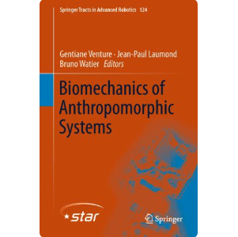

Althogh there are many inter-connections between my projects, I would classify them in three main categories:
|
Bio-inspired Autonomous Robotics:Robots will become ubiquitously useful only when they require just a few attempts to teach themselves to perform different tasks, even with complex bodies and in dynamic environments. Vertebrates use sparse trial and error to learn multiple tasks, despite their intricate tendon-driven anatomies, which are particularly hard to control because they are simultaneously nonlinear, under-determined and over-determined. However, these complex body structures provides them with versatility, agility, efficiency, and adaptability levels way above the current robotic standards. Getting inspired form biological systems, I work on developing few-shot, minimal prior-kowledge and sensory data systems to develop the next generation of bio-inspired robots that feel and act more similar to biological systems. |
|
|  |
Studying Biological Systems:This section of my research focuses on improving upon our understanding about biological systems (both the nervious system, or controller in the engineering language, and the mechanics, or the plant). Marjaninejad et. al. 2017 "Finger movements are mainly represented by a linear transformation of energy in band-specific ECoG signals" can serve as a good example where we shed some light on how our brain works. Marjaninejad & Valero-Cuevas 2019 is also a good example to show how important it is to understand tendon-driven mechanics in order to achieve the enviable levels of agility and versatality in vertebrates as well as to be able to control as efficiently. |
 |
Biomedical Applications:Applications of data-science and control theory techniques (Machine Learning, Pattern Recognition, and Signal Processing) to biological data and enabling better diagnostics in healthcare, improved treatment and assistive devices |